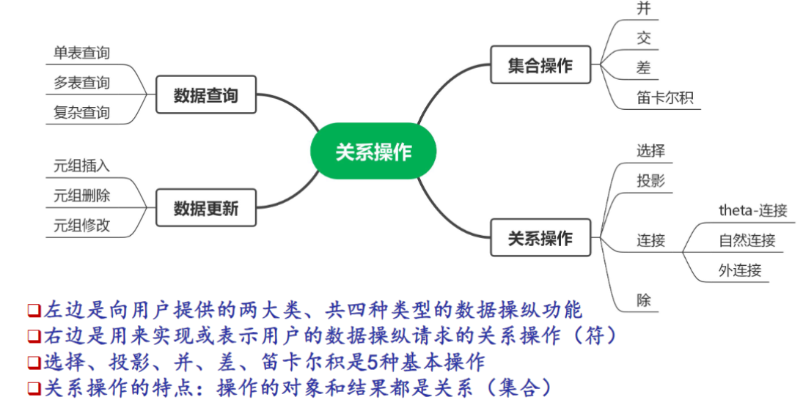
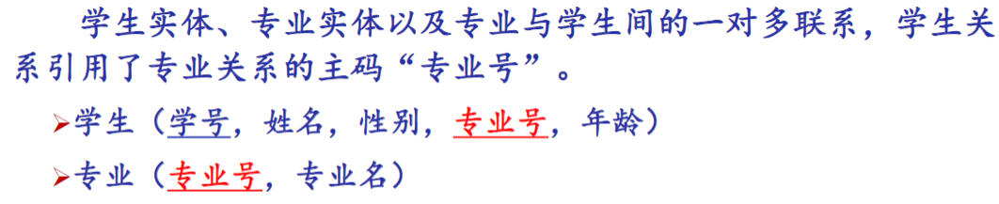
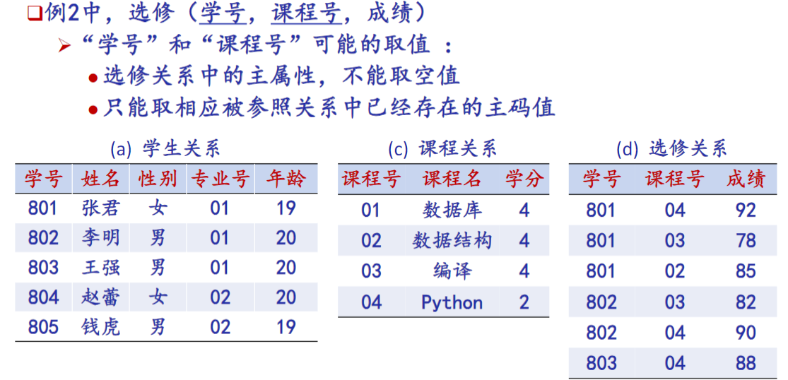

数据管理基础-2.1关系数据模型
关系数据结构及形式化定义
关系
前置概念
域 Domain: 一组具有相同数据类型的值的集合。
- 例：整数、实数、枚举数据类型（{‘男’，‘女’}）
- 每一个域有一个‘域名’，用来区分不同的域。
- 同一个域中的元素互不相同。
笛卡尔积 Cartesian Product:
- 给定一组域 ，允许其中某些域是相同的。
- 的笛卡尔积可表示为：
- 运算结果也是一个集合，其中的每个元素都是一个具有如下形式的 n 元组：，其中
元组 Tuple:
- 笛卡尔积中每一个元素 叫作一个 ‘n 元组’ (n-tuple) 或 ‘n 元有序组’ ，简称 ‘元组’
分量 Component:
- 笛卡尔积元素 中的每一个值 叫作一个 ‘分量’
基数：
- 一个域允许的不同取值个数称为这个域的‘基数’
笛卡尔积的结果表示方法：
- 集合表示：列举出结果集中的所有元组
- 二维表表示：表中每一行对应一个元组，每一列对应一个域。
- 为了区分每一列所对应的域，需要在二维表中添加一个 ‘表头’ (table heading – 二维表第一行)，用于显示每一列对应域的域名
关系的定义
关系 Relation: 给定一个域的序列 （其中可能存在相同的域），笛卡尔积 的子集叫做在域 上的关系，表示为 , 或简写为关系 。
- n 是关系的 ‘目’ 或 ‘度’（Degree）
属性 Attribute:
- 在一个关系中，不同列可以对应相同的域。为了加以区分，关系所对应的二维表中的每一列，被称为是该关系中的一个‘属性’。
- 关系中的每一个属性都有一个名字，称为‘属性名’。在同一个关系中，属性名互不相同。
码 (Key)、候选码 (Candidate key): 若关系中的某一属性组的值能唯一地标识一个元组，而其所有的真子集都不能，则称该属性组为关系的 ‘候选码’，简称 ‘码’。
- 简单的情况：一个候选码只包含一个属性；
- 最极端的情况：由关系中的所有属性构成的属性组是这个关系的候选码，称为 ‘全码’（All-key）
主码（Primary key）：
- 在一个关系中，可以选择一个候选码作为该关系的 ‘主码’。
- ‘主码’ 是关系数据库管理系统（SQL）中才有的概念。当我们在创建关系对应的 ‘基表’ 时，可以为基表定义‘主码’也可以不定义‘主码’。在一张基表中，最多只能定义一个主码。
- 在关系模型理论中，只有 ‘候选码’，不需要为关系定义 ‘主码’。
主属性 与 非主属性/非码属性
- 候选码中的诸属性称为该关系的 ‘主属性’（Prime attribute）
- 不包含在任何侯选码中的属性称为该关系的 ‘非主属性’（NonPrime attribute）或 ‘非码属性’（Non-key attribute）
关系的类别/性质
类型：
- 基本关系（基本表或基表）：实际存在的表，是实际存储数据的逻辑表示。
- 查询表：查询结果对应的表，结果数据不需要持久存储。
- 视图表：由基本表或其他视图表导出的表, 是虚表, 结果数据也不需要持久存储。
当使用‘关系’来作为关系数据模型的数据结构时，需要添加以下的约束：
- 必须是一个有限子集
- 笛卡尔积满足交换律（或者说：关系中的列/属性满足‘无序性’）
关系的性质：
- 列是同质的：每一列中的分量是同一类型的数据，来自同一个域
- 不同的列可出自同一个域：其中的每一列称为一个属性；
- 列的无序性（属性的无序性）
- 行的唯一性（元组的唯一性）
- 行的无序性（元组的无序性）
- 分量必须取原子值：每一个分量都必须是不可分的数据项
关系模型
关系的型与值
- 关系是元组的集合
- 关系模式是关系的 ‘型’，元组集合是关系的 ‘值’
关系模式（Relation Schema）：
- 关系模式是对关系的描述
- 元组集合的结构
- 属性构成（关系模式的核心）
- 属性来自的域
- 属性与域之间的映象关系
- 完整性约束条件：关系中的元组分量和元组需要满足的约束条件
形式化表示：
- R ：关系名
- U ：组成该关系的属性名集合
- D ： U 中属性所来自的域
- DOM ：属性向域的映象集合（描述各个属性对应的域）
- F ：属性间数据的依赖关系的集合（关系上的完整性约束条件）
关系模式通常可以简记为 R (U) 或 R (A1，A2，…，An)
关系数据库
——在一个给定的应用领域中，所有关系的集合构成一个关系数据库
关系数据库的型与值
- 关系数据库的型
- 关系数据库模式，是对关系数据库的描述
- 包括所有关系的关系模式，以及所有其他数据库对象的定义信息
- 关系数据库的值
- 关系模式在某一时刻对应的关系的集合，通常称为关系数据库
关系操作

关系完整性
三类完整性约束：
- 实体完整性
- 参照完整性
- 实体完整性和参照完整性是关系模型必须满足的完整性约束条件， 被称作是关系的两个不变性，由关系系统自动支持。
- 用户定义的完整性
- 是特定应用领域需要遵循的约束条件，体现了具体领域中的语义约束。
实体完整性
—— 指关系中元组（二维表中的行）的唯一性。
在关系数据库管理系统中，实体完整性规则是指：若属性 A 是基本关系（基表）的主码中的属性，则属性 A 不能去‘空值’（null）
- 如果没有为基表定义主码，那么就允许在基表中出现重复的行（元组），这样的基表就不满足实体完整性约束。
- 如果为基表定义主码，DBMS 将自动保证“主码中的所有属性都不能取空值”以及“主码值的唯一性”
参照完整性
关系间的引用：例——实体之间的引用

参照完整性规则：若属性（或属性组）F 是基本关系 R 的外码，它与基本关系 S 的主码 相对应（基本关系 R 和 S 不一定是不同的关系），则对于 R 中的每个元组在 F 上的值必须为：
- 或者取空值（F 的每个属性值均为空值）
- 或者等于 S 中某个元组的主码值

用户定义的完整性
——针对某一具体关系数据库的约束条件，反映某一具体应用所涉及的数据必须满足的语义
要求
例：课程（课程号 课程名 学分）
- 课程号属性值的唯一性约束
- 非主属性课程名的非空约束
- 学分的取值范围约束
数据管理基础-2.1关系数据模型
https://astronautbase.github.io/2025/03/12/数据管理基础-2-1关系数据模型/